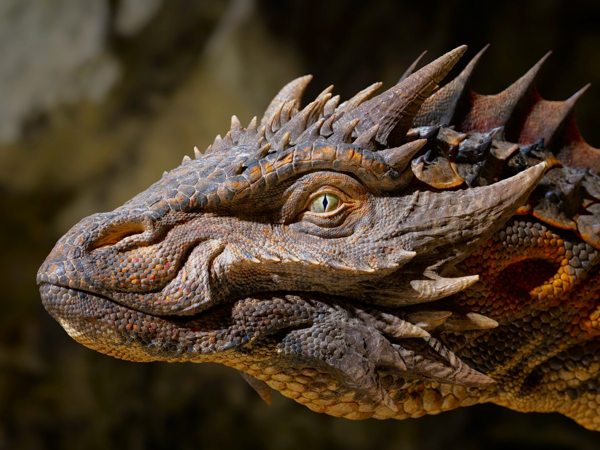
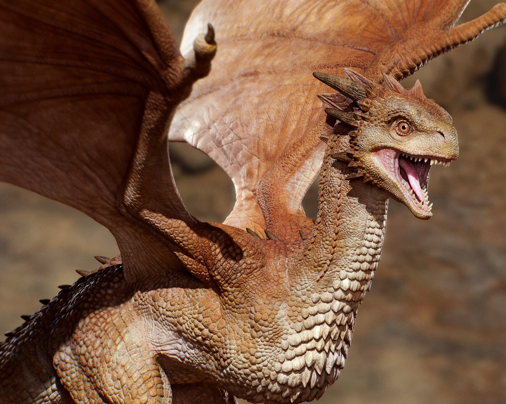
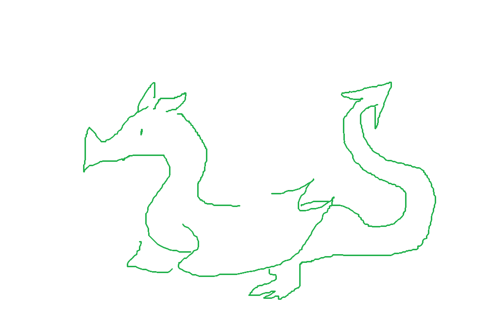
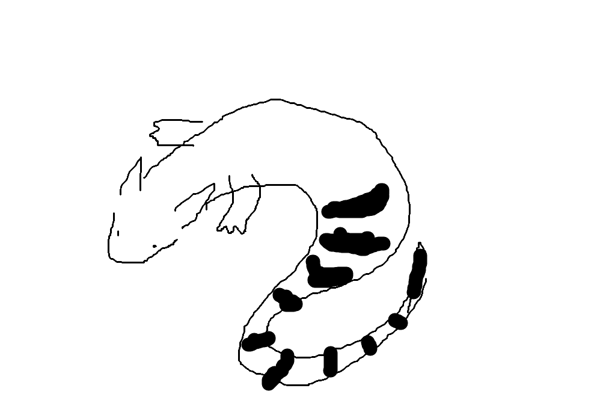

Description
Dragons are similar to reptiles, with long bodies and scales (usually) in a wide range of colors and sizes. They can have one pair of wings and one pair of legs, two pairs of legs/fins, one pair of legs/fins, or no limbs at all. The majority of species have claws, horns, spikes, or natural armor.
Though dragons are under the class Reptilia, they belong to their own order: Dracos. This is separate from lizards, snakes, and turtles. Within this order are five families: wyverns, drakes, sea serpents, wyrms, and true dragons.

Distribution
Dragons inhabit almost every biome and environment. This includes:
- Forests
- Oceans
- Deserts
- Grasslands
- Mountains
However, in recent centuries, dragons have been on a steady decline due to habitat loss, human activity, a decrease in food availability, and poaching. Luckily, many conservation efforts are working hard to preserve endangered species.
"Dragons are essential to the environment for indirectly shaping the land. By regulating prey numbers, dragons allow other plants and animals to flourish in a domino effect—impacting birds, fish, and even butterflies."
— 4Dragons Conservatory
Behavior
Across the various dragon species, behavior varies. Generally, dragons are cautious and elusive, preferring to avoid humans, and some even fear people outright.
Their complex brains put them on par with birds and mammals, with a few species being intelligent enough to deploy hunting strategies.
Dragons occupy several predatory niches, from pack hunters to solo or apex predators. They have the capacity to socialize and form close bonds, or remain solitary.
Contrary to popular belief, dragons are not bloodthirsty, but are highly aggressive when defending their young or their territory, which can span hundreds of miles for larger species. It is best to leave the area if there are signs of dragon activity (scorch marks, talon gouges, scale sheds, etc). Many dragons are extremely dangerous.

Noteworthy Species

Common Green Dragon
When someone uses the word "dragon," they are likely referring to the common green dragon, classified as a true dragon.
This species was the most prolific across Europe, named for their green coloration. The green dragon is a mid-sized animal for their class, though this has been exaggerated in many stories. Due to their numbers, they were prevalent in European folklore.

Banded Wyrm
At a mere three to four inches in length, this dragon is the smallest species of dragon discovered, found in New Guinea. They can fit in the palm of your hand and could be confused for lizards if not for their small horns and two legs.
The banded wyrm is named for the bold black stripes along their tails. Their diet mainly consists of insects, snails, and frogs.
Eurasian Mountain Dragon
This dragon, also classified as a true dragon, is the largest dragon species in the world, almost as large as a small aircraft and able to look a giraffe in the eye. They inhabit mountains and extensive mountain ranges.
They are endangered, with only a few thousand still living in the wild. Their biggest threat was "dragon-slaying" in the Middle Ages, which continued with habitat loss and poaching in modern times.
Fact vs Fiction
Dragons are cold-blooded.
Fiction. Though they are related to reptiles, dragons lack many defining traits, such as ectothermy. Like mammals, they are actually warm-blooded, or endothermic, which allows them to live a more active lifestyle.
Dragons eat humans/livestock.
A bit of both fact and fiction. Dragons typically avoid human settlements and only hunt livestock or people if their normal prey is unavailable, or they are injured/sick, and thus forced to hunt easier yet riskier targets.
Dragons hoard gold.
Fiction. However, some species of dragon are known to swallow precious stones that may aid in their fire-breathing. This could have given rise to hoarding gold in myths.